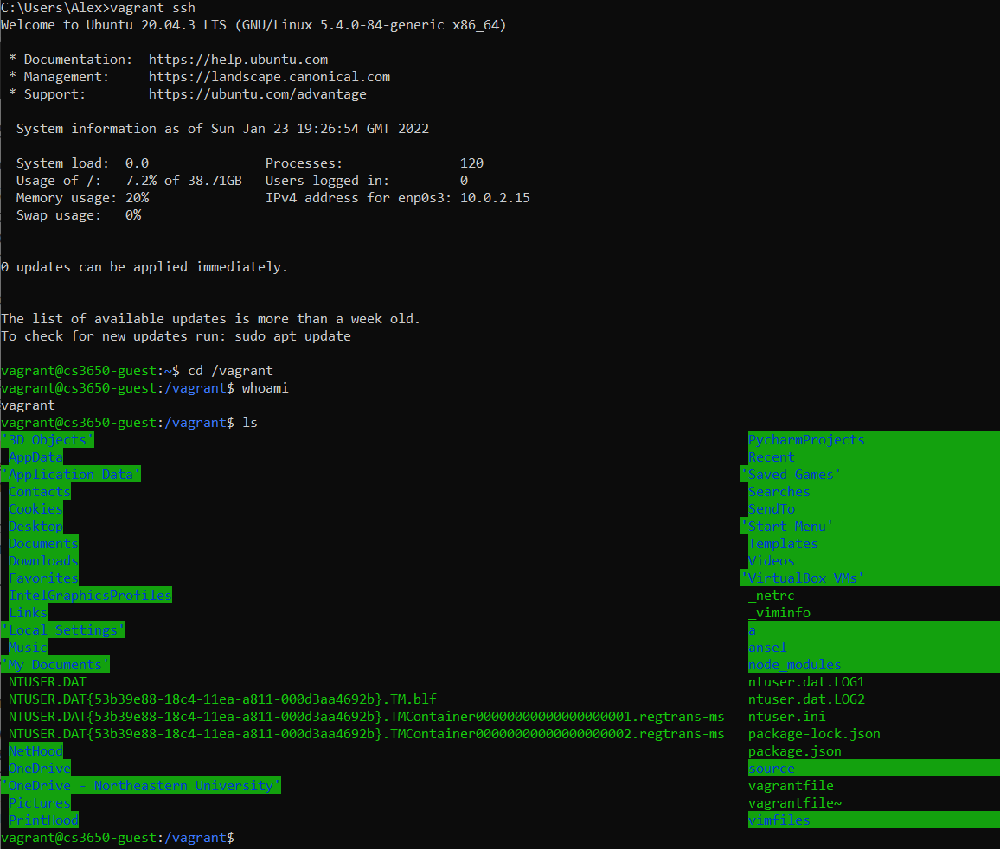

Alexander Qiu @aqiu904 July 7th, 2022
12px to the right of the avatar image and 12px below the title and handle's border, we find the name of the author of the post "Robert Zubrin" followed by their handle "@robert_zubrin". The font size of the author and their handle is 15px. The author color is white and the handle is light gray. There's a date after the handle.

whopper whopper
yabba dabba dop